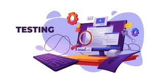

Le testeur logiciel est chargé de vérifier le bon fonctionnement d’un logiciel, d’un site web, ou d’une application. Il travaille conjointement avec les équipes de produit et de développement afin d’assurer que le code est conforme aux besoins identifiés dans les spécifications. Pour ce faire, il effectue différents tests et utilise des outils de testing pour détecter les bugs et les problèmes qui peuvent affecter la qualité et la performance de ces programmes. Ces tests peuvent être manuels ou automatisés, et ils visent à couvrir le maximum de cas d’utilisation possibles. Le testeur logiciel documente les résultats de ses tests et travaille en étroite collaboration avec les développeurs pour corriger les bugs et améliorer la qualité du logiciel. Lorsqu’il a des compétences en développement, il est alors en meilleure capacité d’analyser le fonctionnement du code afin de proposer des pistes de solution aux équipes de développement. C’est un atout important sur le marché du travail car des compétences en développement sont souvent recherchées par les employeurs dans les équipes de test.
|  |